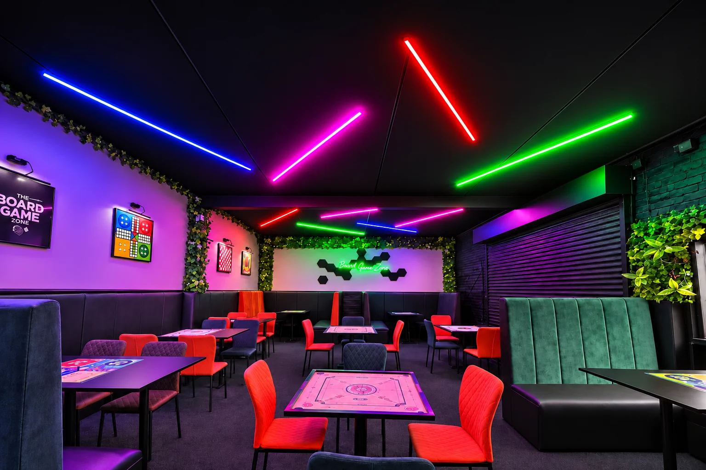
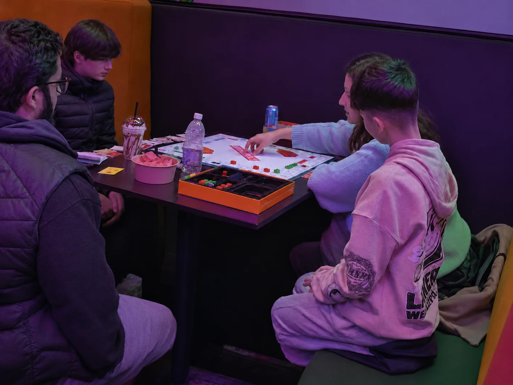

A simple option for families, friends and groups who want games, desserts and an evening activity without travelling far beyond Blackburn.
A different day or night outWorth the trip
Worth the trip
to Blackburn.
If you are coming from elsewhere in Lancashire and want more than another meal or cinema visit, The Board Game Café gives friends, families and organised groups several reasons to stay in one place.

Coming from nearby?Make Blackburn
Make Blackburn
the destination.
The café is at The Stables on Eanam, with free parking on site. That makes it practical for groups travelling in rather than relying only on town-centre parking.
Useful for mixed groups that want several activities under one roof rather than choosing between a café, gaming venue and sports bar.
A late-opening social venue for birthdays, group visits, Champions League nights and relaxed catch-ups.
What makes the trip worthwhilePlay, eat,
Play, eat,
watch and stay.
You can build the visit around what your group actually enjoys instead of committing everyone to one activity.
Games & consoles
Choose familiar board games, social favourites, console gaming, venue challenges and tournaments. You do not need to be a serious hobby gamer to enjoy the space.
Desserts & karak
Cakes, sundaes, milkshakes, mocktails, hot drinks, ice cream and fresh karak chai make the venue work equally well for a short dessert stop or a longer table booking.
Every Champions League game
Our TNT Sports commercial package includes every UEFA Champions League match, including Amazon Prime’s Tuesday picks. Contact us to confirm the fixture and screen before travelling.
Family friendlyAfternoons for families.
Afternoons for families.
Late nights for everyone.
Families and children are welcome, while Friday and Saturday opening runs until 2am for customers looking for a later night out. If you are bringing younger children later in the evening, contact us first if you want to check the suitability of a particular event or time.
For larger visits, birthdays, schools, care groups, charities, clubs and corporate teams can also enquire about organised bookings or private use of the venue.

Before you travel
A few practical details.
Standard table pricing is £15 for the first hour per table, including four drinks, then £8 for each additional hour per table. We confirm how many tables your party needs when we confirm the booking.
If you are travelling for a particular football match, movie night, group event or late visit, contact us before setting off so we can confirm the relevant details.
Opening hours
When to visit.
Monday7pm–12am
TuesdayClosed
Wednesday7pm–12am
Thursday7pm–12am
Friday7pm–2am
Saturday4pm–2am
Sunday2pm–11pm